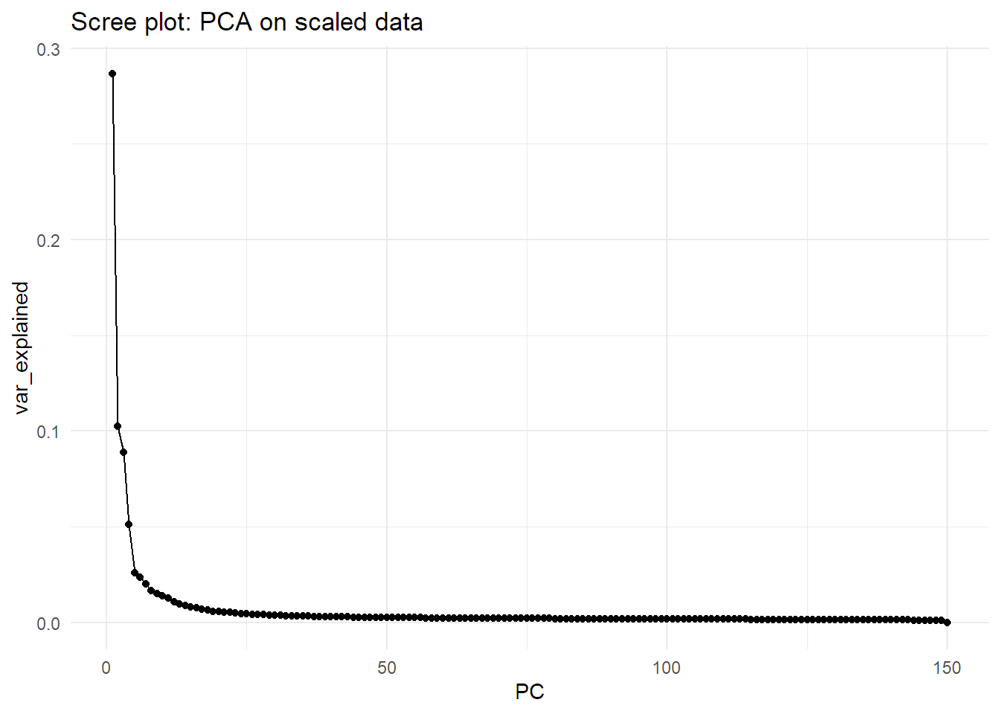
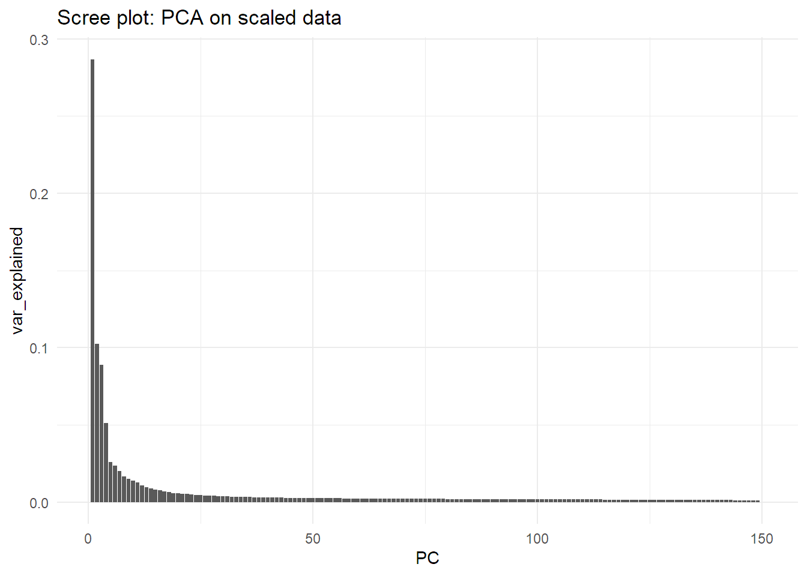
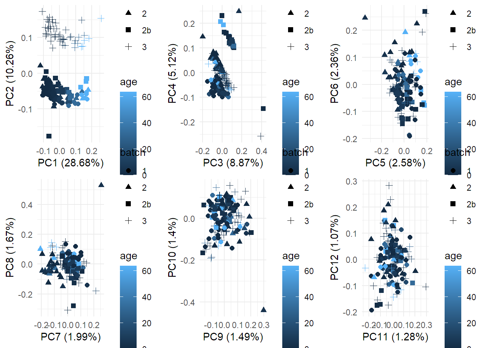

Last updated: 2022-02-25
Checks: 7 0
Knit directory: workflowr/data/
This reproducible R Markdown analysis was created with workflowr (version 1.6.2). The Checks tab describes the reproducibility checks that were applied when the results were created. The Past versions tab lists the development history.
Great! Since the R Markdown file has been committed to the Git repository, you know the exact version of the code that produced these results.
Great job! The global environment was empty. Objects defined in the global environment can affect the analysis in your R Markdown file in unknown ways. For reproduciblity it’s best to always run the code in an empty environment.
The command set.seed(20220214) was run prior to running the code in the R Markdown file. Setting a seed ensures that any results that rely on randomness, e.g. subsampling or permutations, are reproducible.
Great job! Recording the operating system, R version, and package versions is critical for reproducibility.
Nice! There were no cached chunks for this analysis, so you can be confident that you successfully produced the results during this run.
Great job! Using relative paths to the files within your workflowr project makes it easier to run your code on other machines.
Great! You are using Git for version control. Tracking code development and connecting the code version to the results is critical for reproducibility.
The results in this page were generated with repository version e5bedbe. See the Past versions tab to see a history of the changes made to the R Markdown and HTML files.
Note that you need to be careful to ensure that all relevant files for the analysis have been committed to Git prior to generating the results (you can use wflow_publish or wflow_git_commit). workflowr only checks the R Markdown file, but you know if there are other scripts or data files that it depends on. Below is the status of the Git repository when the results were generated:
Ignored files:
Ignored: .Rhistory
Ignored: .Rproj.user/
Ignored: analysis/preprocessing_thesis_cache/
Untracked files:
Untracked: data/TraceAge_bloodspots_t3_neg_clean.csv
Untracked: data/TraceAge_bloodspots_t3_pos_clean.csv
Unstaged changes:
Modified: _workflowr.yml
Note that any generated files, e.g. HTML, png, CSS, etc., are not included in this status report because it is ok for generated content to have uncommitted changes.
These are the previous versions of the repository in which changes were made to the R Markdown (analysis/models_tests.Rmd) and HTML (docs/models_tests.html) files. If you’ve configured a remote Git repository (see ?wflow_git_remote), click on the hyperlinks in the table below to view the files as they were in that past version.
| File | Version | Author | Date | Message |
|---|---|---|---|---|
| Rmd | e5bedbe | marcsole96 | 2022-02-25 | models |
#setwd("../workflowr/data")
mdf <- read_csv("TraceAge_bloodspots_t3_pos_clean.csv")
-- Column specification --------------------------------------------------------
cols(
.default = col_double(),
sample = col_character(),
batch = col_character(),
type = col_character(),
sample_id = col_character()
)
i Use `spec()` for the full column specifications.#mdf<-mdf %>% gather(key="mz",value="values",6:ncol(mdf)) %>% spread(mz,values)pca_df<-mdf %>% filter(type=="sample")
pr.out <- prcomp(pca_df[,6:(ncol(mdf))], scale. = TRUE)summary(pr.out)Importance of components:
PC1 PC2 PC3 PC4 PC5 PC6
Standard deviation 61.1719 36.5778 34.01125 25.85549 18.33475 17.52960
Proportion of Variance 0.2868 0.1026 0.08867 0.05124 0.02577 0.02355
Cumulative Proportion 0.2868 0.3894 0.47806 0.52930 0.55506 0.57862
PC7 PC8 PC9 PC10 PC11 PC12
Standard deviation 16.10548 14.76952 13.96352 13.49132 12.89729 11.8172
Proportion of Variance 0.01988 0.01672 0.01495 0.01395 0.01275 0.0107
Cumulative Proportion 0.59850 0.61522 0.63017 0.64412 0.65687 0.6676
PC13 PC14 PC15 PC16 PC17 PC18
Standard deviation 11.19454 10.7132 10.31723 9.83754 9.37613 9.18682
Proportion of Variance 0.00961 0.0088 0.00816 0.00742 0.00674 0.00647
Cumulative Proportion 0.67718 0.6860 0.69414 0.70155 0.70829 0.71476
PC19 PC20 PC21 PC22 PC23 PC24 PC25
Standard deviation 8.72308 8.59363 8.29447 8.14172 7.8287 7.6583 7.50254
Proportion of Variance 0.00583 0.00566 0.00527 0.00508 0.0047 0.0045 0.00431
Cumulative Proportion 0.72060 0.72626 0.73153 0.73661 0.7413 0.7458 0.75012
PC26 PC27 PC28 PC29 PC30 PC31 PC32
Standard deviation 7.36204 7.24100 7.15914 7.0453 6.96515 6.83313 6.75161
Proportion of Variance 0.00415 0.00402 0.00393 0.0038 0.00372 0.00358 0.00349
Cumulative Proportion 0.75427 0.75829 0.76222 0.7660 0.76974 0.77332 0.77682
PC33 PC34 PC35 PC36 PC37 PC38 PC39
Standard deviation 6.6597 6.55265 6.50010 6.49146 6.29068 6.23213 6.16929
Proportion of Variance 0.0034 0.00329 0.00324 0.00323 0.00303 0.00298 0.00292
Cumulative Proportion 0.7802 0.78351 0.78675 0.78998 0.79301 0.79599 0.79890
PC40 PC41 PC42 PC43 PC44 PC45 PC46
Standard deviation 6.13645 6.07201 6.03736 5.99934 5.97271 5.91812 5.87426
Proportion of Variance 0.00289 0.00283 0.00279 0.00276 0.00273 0.00268 0.00265
Cumulative Proportion 0.80179 0.80462 0.80741 0.81017 0.81290 0.81559 0.81823
PC47 PC48 PC49 PC50 PC51 PC52 PC53
Standard deviation 5.81477 5.77791 5.75498 5.73575 5.67567 5.64852 5.62593
Proportion of Variance 0.00259 0.00256 0.00254 0.00252 0.00247 0.00245 0.00243
Cumulative Proportion 0.82083 0.82338 0.82592 0.82845 0.83091 0.83336 0.83579
PC54 PC55 PC56 PC57 PC58 PC59 PC60
Standard deviation 5.61234 5.5972 5.54309 5.50155 5.47132 5.42435 5.40076
Proportion of Variance 0.00241 0.0024 0.00236 0.00232 0.00229 0.00226 0.00224
Cumulative Proportion 0.83820 0.8406 0.84296 0.84528 0.84757 0.84983 0.85206
PC61 PC62 PC63 PC64 PC65 PC66 PC67
Standard deviation 5.39151 5.38624 5.3589 5.32460 5.31122 5.29902 5.28267
Proportion of Variance 0.00223 0.00222 0.0022 0.00217 0.00216 0.00215 0.00214
Cumulative Proportion 0.85429 0.85651 0.8587 0.86089 0.86305 0.86520 0.86734
PC68 PC69 PC70 PC71 PC72 PC73 PC74
Standard deviation 5.24936 5.21122 5.20068 5.17755 5.16365 5.14324 5.14021
Proportion of Variance 0.00211 0.00208 0.00207 0.00205 0.00204 0.00203 0.00203
Cumulative Proportion 0.86946 0.87154 0.87361 0.87566 0.87771 0.87974 0.88176
PC75 PC76 PC77 PC78 PC79 PC80 PC81
Standard deviation 5.11630 5.1079 5.08758 5.07854 5.06003 5.04592 5.03179
Proportion of Variance 0.00201 0.0020 0.00198 0.00198 0.00196 0.00195 0.00194
Cumulative Proportion 0.88377 0.8858 0.88775 0.88973 0.89169 0.89364 0.89558
PC82 PC83 PC84 PC85 PC86 PC87 PC88
Standard deviation 5.00116 4.9828 4.9780 4.95123 4.93061 4.92616 4.91371
Proportion of Variance 0.00192 0.0019 0.0019 0.00188 0.00186 0.00186 0.00185
Cumulative Proportion 0.89750 0.8994 0.9013 0.90318 0.90505 0.90691 0.90876
PC89 PC90 PC91 PC92 PC93 PC94 PC95
Standard deviation 4.89825 4.88759 4.87819 4.85675 4.83387 4.83311 4.81244
Proportion of Variance 0.00184 0.00183 0.00182 0.00181 0.00179 0.00179 0.00178
Cumulative Proportion 0.91060 0.91243 0.91425 0.91606 0.91785 0.91964 0.92142
PC96 PC97 PC98 PC99 PC100 PC101 PC102
Standard deviation 4.80100 4.78868 4.77507 4.74999 4.73478 4.7149 4.69994
Proportion of Variance 0.00177 0.00176 0.00175 0.00173 0.00172 0.0017 0.00169
Cumulative Proportion 0.92318 0.92494 0.92669 0.92842 0.93014 0.9318 0.93353
PC103 PC104 PC105 PC106 PC107 PC108 PC109
Standard deviation 4.68789 4.67337 4.65059 4.64418 4.61888 4.61395 4.60011
Proportion of Variance 0.00168 0.00167 0.00166 0.00165 0.00164 0.00163 0.00162
Cumulative Proportion 0.93522 0.93689 0.93855 0.94020 0.94184 0.94347 0.94509
PC110 PC111 PC112 PC113 PC114 PC115 PC116
Standard deviation 4.59223 4.5627 4.55056 4.54679 4.53393 4.51234 4.50356
Proportion of Variance 0.00162 0.0016 0.00159 0.00158 0.00158 0.00156 0.00155
Cumulative Proportion 0.94671 0.9483 0.94989 0.95148 0.95305 0.95461 0.95617
PC117 PC118 PC119 PC120 PC121 PC122 PC123
Standard deviation 4.48721 4.46259 4.45640 4.43617 4.4243 4.39812 4.39492
Proportion of Variance 0.00154 0.00153 0.00152 0.00151 0.0015 0.00148 0.00148
Cumulative Proportion 0.95771 0.95924 0.96076 0.96227 0.9638 0.96525 0.96673
PC124 PC125 PC126 PC127 PC128 PC129 PC130
Standard deviation 4.38302 4.35595 4.33874 4.32151 4.30491 4.2736 4.25327
Proportion of Variance 0.00147 0.00145 0.00144 0.00143 0.00142 0.0014 0.00139
Cumulative Proportion 0.96820 0.96966 0.97110 0.97253 0.97395 0.9754 0.97674
PC131 PC132 PC133 PC134 PC135 PC136 PC137
Standard deviation 4.23458 4.21389 4.20902 4.15980 4.15687 4.13619 4.1255
Proportion of Variance 0.00137 0.00136 0.00136 0.00133 0.00132 0.00131 0.0013
Cumulative Proportion 0.97811 0.97948 0.98083 0.98216 0.98348 0.98480 0.9861
PC138 PC139 PC140 PC141 PC142 PC143 PC144
Standard deviation 4.08384 4.08168 4.03200 4.01403 3.98448 3.97372 3.89769
Proportion of Variance 0.00128 0.00128 0.00125 0.00124 0.00122 0.00121 0.00116
Cumulative Proportion 0.98738 0.98866 0.98990 0.99114 0.99235 0.99356 0.99473
PC145 PC146 PC147 PC148 PC149 PC150
Standard deviation 3.82894 3.77801 3.68576 3.67448 3.56968 3.747e-14
Proportion of Variance 0.00112 0.00109 0.00104 0.00103 0.00098 0.000e+00
Cumulative Proportion 0.99585 0.99695 0.99799 0.99902 1.00000 1.000e+00var_explained_df <- data.frame(PC= as.numeric(paste0(1:150)),
var_explained=(pr.out$sdev)^2/sum((pr.out$sdev)^2))
var_explained_df %>%
ggplot(aes(x=PC,y=var_explained, group=1))+
geom_point()+
geom_line()+
labs(title="Scree plot: PCA on scaled data")
var_explained_df %>%
ggplot(aes(x=PC,y=var_explained))+
geom_col()+
labs(title="Scree plot: PCA on scaled data")
sum(var_explained_df$var_explained[1:11])[1] 0.6568698p1<-autoplot(pr.out, data = pca_df, colour = 'age', shape="batch", size=2, x = 1, y =2)Warning: `select_()` was deprecated in dplyr 0.7.0.
Please use `select()` instead.
This warning is displayed once every 8 hours.
Call `lifecycle::last_warnings()` to see where this warning was generated.p2<-autoplot(pr.out, data = pca_df, colour = 'age', shape="batch", size=2, x = 3, y =4)
p3<-autoplot(pr.out, data = pca_df, colour = 'age', shape="batch", size=2, x = 5, y =6)
p4<-autoplot(pr.out, data = pca_df, colour = 'age', shape="batch", size=2, x = 7, y =8)
p5<-autoplot(pr.out, data = pca_df, colour = 'age', shape="batch", size=2, x = 9, y =10)
p6<-autoplot(pr.out, data = pca_df, colour = 'age', shape="batch", size=2, x = 11, y =12)
cowplot::plot_grid(p1,p2,p3,p4,p5,p6)
raw <- mdf[6:(ncol(mdf))]
rowinfo <- mdf[0:5]
rowinfo <- tibble::rowid_to_column(rowinfo, "rowid")
tmp1 <- rowinfo %>% filter(type %in% c("sample")) %>% mutate(rowid2 = row_number())
tmp2 <- raw[tmp1$rowid,]
r <- prcomp(x = tmp2, retx = T, center=T, scale. = T, rank. = 12)
bad_rows <- tibble(rowid2=apply(r$x, 2, function(x) {
which(abs(x - median(x)) > (1.5 * quantile(x,0.95)-quantile(x,0.05)))
}) %>%
unlist() %>%
as.vector()) %>%
count(rowid2)
tmp1 <- tmp1 %>%
left_join(bad_rows) %>%
mutate(n=ifelse(is.na(n), 0,n)) %>%
mutate(label=ifelse(n>0, rowid, "")) %>%
{.}Joining, by = "rowid2"pd <- r$x %>%
as_tibble() %>%
bind_cols(tmp1) %>%
{.}
pd <- pd %>%
mutate(response = ifelse(n>0,"Outlier", "Not outlier")) %>%
mutate(response = factor(response))
plotlist <- list()
for(i in 1:(ncol(r$x)/2)) {
xvar <- names(pd)[2*i-1]
yvar <- names(pd)[2*i]
p1 <- ggplot(pd,aes(x=!!ensym(xvar), y=!!ensym(yvar),
fill=response, label=label))+
geom_point(shape=21, color="#FFFFFFFF", size=3) +
scale_fill_manual(values = c("#D0D0D0", "#D04040")) +
theme(legend.position="none") +
NULL
plotlist[[length(plotlist)+1]] <- p1
rm(p1)
}
cowplot::plot_grid(plotlist = plotlist)training_DF <- mdf %>% select(-sample,-batch,-type,-sample_id)
training_DF[is.na(training_DF)] <- 0
training_x <- training_DF %>% select(-age) %>% as.data.frame()
training_y <- training_DF$agetrControl <- trainControl(method = "repeatedcv", number = 5, verboseIter = T, savePredictions = "final")
fit1 <- train(x = training_x,
y = training_y,
method = "glmnet",
tuneLength = 15,
trControl = trControl
)+ Fold1.Rep1: alpha=0.1000, lambda=26.49
- Fold1.Rep1: alpha=0.1000, lambda=26.49
+ Fold1.Rep1: alpha=0.1643, lambda=26.49
- Fold1.Rep1: alpha=0.1643, lambda=26.49
+ Fold1.Rep1: alpha=0.2286, lambda=26.49
- Fold1.Rep1: alpha=0.2286, lambda=26.49
+ Fold1.Rep1: alpha=0.2929, lambda=26.49
- Fold1.Rep1: alpha=0.2929, lambda=26.49
+ Fold1.Rep1: alpha=0.3571, lambda=26.49
- Fold1.Rep1: alpha=0.3571, lambda=26.49
+ Fold1.Rep1: alpha=0.4214, lambda=26.49
- Fold1.Rep1: alpha=0.4214, lambda=26.49
+ Fold1.Rep1: alpha=0.4857, lambda=26.49
- Fold1.Rep1: alpha=0.4857, lambda=26.49
+ Fold1.Rep1: alpha=0.5500, lambda=26.49
- Fold1.Rep1: alpha=0.5500, lambda=26.49
+ Fold1.Rep1: alpha=0.6143, lambda=26.49
- Fold1.Rep1: alpha=0.6143, lambda=26.49
+ Fold1.Rep1: alpha=0.6786, lambda=26.49
- Fold1.Rep1: alpha=0.6786, lambda=26.49
+ Fold1.Rep1: alpha=0.7429, lambda=26.49
- Fold1.Rep1: alpha=0.7429, lambda=26.49
+ Fold1.Rep1: alpha=0.8071, lambda=26.49
- Fold1.Rep1: alpha=0.8071, lambda=26.49
+ Fold1.Rep1: alpha=0.8714, lambda=26.49
- Fold1.Rep1: alpha=0.8714, lambda=26.49
+ Fold1.Rep1: alpha=0.9357, lambda=26.49
- Fold1.Rep1: alpha=0.9357, lambda=26.49
+ Fold1.Rep1: alpha=1.0000, lambda=26.49
- Fold1.Rep1: alpha=1.0000, lambda=26.49
+ Fold2.Rep1: alpha=0.1000, lambda=26.49
- Fold2.Rep1: alpha=0.1000, lambda=26.49
+ Fold2.Rep1: alpha=0.1643, lambda=26.49
- Fold2.Rep1: alpha=0.1643, lambda=26.49
+ Fold2.Rep1: alpha=0.2286, lambda=26.49
- Fold2.Rep1: alpha=0.2286, lambda=26.49
+ Fold2.Rep1: alpha=0.2929, lambda=26.49
- Fold2.Rep1: alpha=0.2929, lambda=26.49
+ Fold2.Rep1: alpha=0.3571, lambda=26.49
- Fold2.Rep1: alpha=0.3571, lambda=26.49
+ Fold2.Rep1: alpha=0.4214, lambda=26.49
- Fold2.Rep1: alpha=0.4214, lambda=26.49
+ Fold2.Rep1: alpha=0.4857, lambda=26.49
- Fold2.Rep1: alpha=0.4857, lambda=26.49
+ Fold2.Rep1: alpha=0.5500, lambda=26.49
- Fold2.Rep1: alpha=0.5500, lambda=26.49
+ Fold2.Rep1: alpha=0.6143, lambda=26.49
- Fold2.Rep1: alpha=0.6143, lambda=26.49
+ Fold2.Rep1: alpha=0.6786, lambda=26.49
- Fold2.Rep1: alpha=0.6786, lambda=26.49
+ Fold2.Rep1: alpha=0.7429, lambda=26.49
- Fold2.Rep1: alpha=0.7429, lambda=26.49
+ Fold2.Rep1: alpha=0.8071, lambda=26.49
- Fold2.Rep1: alpha=0.8071, lambda=26.49
+ Fold2.Rep1: alpha=0.8714, lambda=26.49
- Fold2.Rep1: alpha=0.8714, lambda=26.49
+ Fold2.Rep1: alpha=0.9357, lambda=26.49
- Fold2.Rep1: alpha=0.9357, lambda=26.49
+ Fold2.Rep1: alpha=1.0000, lambda=26.49
- Fold2.Rep1: alpha=1.0000, lambda=26.49
+ Fold3.Rep1: alpha=0.1000, lambda=26.49
- Fold3.Rep1: alpha=0.1000, lambda=26.49
+ Fold3.Rep1: alpha=0.1643, lambda=26.49
- Fold3.Rep1: alpha=0.1643, lambda=26.49
+ Fold3.Rep1: alpha=0.2286, lambda=26.49
- Fold3.Rep1: alpha=0.2286, lambda=26.49
+ Fold3.Rep1: alpha=0.2929, lambda=26.49
- Fold3.Rep1: alpha=0.2929, lambda=26.49
+ Fold3.Rep1: alpha=0.3571, lambda=26.49
- Fold3.Rep1: alpha=0.3571, lambda=26.49
+ Fold3.Rep1: alpha=0.4214, lambda=26.49
- Fold3.Rep1: alpha=0.4214, lambda=26.49
+ Fold3.Rep1: alpha=0.4857, lambda=26.49
- Fold3.Rep1: alpha=0.4857, lambda=26.49
+ Fold3.Rep1: alpha=0.5500, lambda=26.49
- Fold3.Rep1: alpha=0.5500, lambda=26.49
+ Fold3.Rep1: alpha=0.6143, lambda=26.49
- Fold3.Rep1: alpha=0.6143, lambda=26.49
+ Fold3.Rep1: alpha=0.6786, lambda=26.49
- Fold3.Rep1: alpha=0.6786, lambda=26.49
+ Fold3.Rep1: alpha=0.7429, lambda=26.49
- Fold3.Rep1: alpha=0.7429, lambda=26.49
+ Fold3.Rep1: alpha=0.8071, lambda=26.49
- Fold3.Rep1: alpha=0.8071, lambda=26.49
+ Fold3.Rep1: alpha=0.8714, lambda=26.49
- Fold3.Rep1: alpha=0.8714, lambda=26.49
+ Fold3.Rep1: alpha=0.9357, lambda=26.49
- Fold3.Rep1: alpha=0.9357, lambda=26.49
+ Fold3.Rep1: alpha=1.0000, lambda=26.49
- Fold3.Rep1: alpha=1.0000, lambda=26.49
+ Fold4.Rep1: alpha=0.1000, lambda=26.49
- Fold4.Rep1: alpha=0.1000, lambda=26.49
+ Fold4.Rep1: alpha=0.1643, lambda=26.49
- Fold4.Rep1: alpha=0.1643, lambda=26.49
+ Fold4.Rep1: alpha=0.2286, lambda=26.49
- Fold4.Rep1: alpha=0.2286, lambda=26.49
+ Fold4.Rep1: alpha=0.2929, lambda=26.49
- Fold4.Rep1: alpha=0.2929, lambda=26.49
+ Fold4.Rep1: alpha=0.3571, lambda=26.49
- Fold4.Rep1: alpha=0.3571, lambda=26.49
+ Fold4.Rep1: alpha=0.4214, lambda=26.49
- Fold4.Rep1: alpha=0.4214, lambda=26.49
+ Fold4.Rep1: alpha=0.4857, lambda=26.49
- Fold4.Rep1: alpha=0.4857, lambda=26.49
+ Fold4.Rep1: alpha=0.5500, lambda=26.49
- Fold4.Rep1: alpha=0.5500, lambda=26.49
+ Fold4.Rep1: alpha=0.6143, lambda=26.49
- Fold4.Rep1: alpha=0.6143, lambda=26.49
+ Fold4.Rep1: alpha=0.6786, lambda=26.49
- Fold4.Rep1: alpha=0.6786, lambda=26.49
+ Fold4.Rep1: alpha=0.7429, lambda=26.49
- Fold4.Rep1: alpha=0.7429, lambda=26.49
+ Fold4.Rep1: alpha=0.8071, lambda=26.49
- Fold4.Rep1: alpha=0.8071, lambda=26.49
+ Fold4.Rep1: alpha=0.8714, lambda=26.49
- Fold4.Rep1: alpha=0.8714, lambda=26.49
+ Fold4.Rep1: alpha=0.9357, lambda=26.49
- Fold4.Rep1: alpha=0.9357, lambda=26.49
+ Fold4.Rep1: alpha=1.0000, lambda=26.49
- Fold4.Rep1: alpha=1.0000, lambda=26.49
+ Fold5.Rep1: alpha=0.1000, lambda=26.49
- Fold5.Rep1: alpha=0.1000, lambda=26.49
+ Fold5.Rep1: alpha=0.1643, lambda=26.49
- Fold5.Rep1: alpha=0.1643, lambda=26.49
+ Fold5.Rep1: alpha=0.2286, lambda=26.49
- Fold5.Rep1: alpha=0.2286, lambda=26.49
+ Fold5.Rep1: alpha=0.2929, lambda=26.49
- Fold5.Rep1: alpha=0.2929, lambda=26.49
+ Fold5.Rep1: alpha=0.3571, lambda=26.49
- Fold5.Rep1: alpha=0.3571, lambda=26.49
+ Fold5.Rep1: alpha=0.4214, lambda=26.49
- Fold5.Rep1: alpha=0.4214, lambda=26.49
+ Fold5.Rep1: alpha=0.4857, lambda=26.49
- Fold5.Rep1: alpha=0.4857, lambda=26.49
+ Fold5.Rep1: alpha=0.5500, lambda=26.49
- Fold5.Rep1: alpha=0.5500, lambda=26.49
+ Fold5.Rep1: alpha=0.6143, lambda=26.49
- Fold5.Rep1: alpha=0.6143, lambda=26.49
+ Fold5.Rep1: alpha=0.6786, lambda=26.49
- Fold5.Rep1: alpha=0.6786, lambda=26.49
+ Fold5.Rep1: alpha=0.7429, lambda=26.49
- Fold5.Rep1: alpha=0.7429, lambda=26.49
+ Fold5.Rep1: alpha=0.8071, lambda=26.49
- Fold5.Rep1: alpha=0.8071, lambda=26.49
+ Fold5.Rep1: alpha=0.8714, lambda=26.49
- Fold5.Rep1: alpha=0.8714, lambda=26.49
+ Fold5.Rep1: alpha=0.9357, lambda=26.49
- Fold5.Rep1: alpha=0.9357, lambda=26.49
+ Fold5.Rep1: alpha=1.0000, lambda=26.49
- Fold5.Rep1: alpha=1.0000, lambda=26.49
Aggregating results
Selecting tuning parameters
Fitting alpha = 0.1, lambda = 1.49 on full training setfit1glmnet
184 samples
13046 predictors
No pre-processing
Resampling: Cross-Validated (5 fold, repeated 1 times)
Summary of sample sizes: 147, 147, 147, 147, 148
Resampling results across tuning parameters:
alpha lambda RMSE Rsquared MAE
0.1000000 0.4711134 3.194400 0.9679639 2.017118
0.1000000 0.6282398 3.194400 0.9679639 2.017118
0.1000000 0.8377712 3.194400 0.9679639 2.017118
0.1000000 1.1171859 3.194400 0.9679639 2.017118
0.1000000 1.4897913 3.194400 0.9679639 2.017118
0.1000000 1.9866686 3.209144 0.9676787 2.025942
0.1000000 2.6492652 3.233959 0.9672572 2.045555
0.1000000 3.5328519 3.265404 0.9669435 2.064946
0.1000000 4.7111338 3.297971 0.9667604 2.079220
0.1000000 6.2823978 3.355607 0.9665326 2.075572
0.1000000 8.3777121 3.465222 0.9657290 2.099200
0.1000000 11.1718587 3.671644 0.9638870 2.209679
0.1000000 14.8979130 4.011629 0.9600253 2.409816
0.1000000 19.8666863 4.521183 0.9528387 2.748314
0.1000000 26.4926520 5.234478 0.9413226 3.253384
0.1642857 0.4711134 3.247980 0.9670877 2.070741
0.1642857 0.6282398 3.247980 0.9670877 2.070741
0.1642857 0.8377712 3.247980 0.9670877 2.070741
0.1642857 1.1171859 3.249752 0.9670308 2.072939
0.1642857 1.4897913 3.270251 0.9665946 2.097269
0.1642857 1.9866686 3.291031 0.9662846 2.117992
0.1642857 2.6492652 3.306538 0.9663819 2.126547
0.1642857 3.5328519 3.330315 0.9666728 2.111535
0.1642857 4.7111338 3.398965 0.9665791 2.095522
0.1642857 6.2823978 3.561828 0.9653679 2.162196
0.1642857 8.3777121 3.837460 0.9625444 2.306603
0.1642857 11.1718587 4.271492 0.9569225 2.591157
0.1642857 14.8979130 4.916070 0.9469767 3.040139
0.1642857 19.8666863 5.709255 0.9357804 3.655700
0.1642857 26.4926520 6.554818 0.9333040 4.262693
0.2285714 0.4711134 3.285506 0.9666037 2.107578
0.2285714 0.6282398 3.285506 0.9666037 2.107578
0.2285714 0.8377712 3.287872 0.9665122 2.113927
0.2285714 1.1171859 3.298496 0.9661873 2.131501
0.2285714 1.4897913 3.304870 0.9661157 2.143236
0.2285714 1.9866686 3.312572 0.9664404 2.139312
0.2285714 2.6492652 3.331449 0.9667148 2.123784
0.2285714 3.5328519 3.392691 0.9668267 2.104556
0.2285714 4.7111338 3.564607 0.9655676 2.166726
0.2285714 6.2823978 3.856781 0.9624220 2.326199
0.2285714 8.3777121 4.315633 0.9564601 2.630482
0.2285714 11.1718587 4.975938 0.9464129 3.093306
0.2285714 14.8979130 5.778754 0.9357599 3.711536
0.2285714 19.8666863 6.644580 0.9343340 4.330963
0.2285714 26.4926520 7.903599 0.9330231 5.276892
0.2928571 0.4711134 3.300576 0.9665165 2.122168
0.2928571 0.6282398 3.298251 0.9665117 2.123888
0.2928571 0.8377712 3.307307 0.9661269 2.139619
0.2928571 1.1171859 3.304734 0.9661475 2.145460
0.2928571 1.4897913 3.308910 0.9665211 2.146690
0.2928571 1.9866686 3.313845 0.9670099 2.124603
0.2928571 2.6492652 3.368391 0.9671395 2.110595
0.2928571 3.5328519 3.513101 0.9661978 2.140993
0.2928571 4.7111338 3.786531 0.9632113 2.287515
0.2928571 6.2823978 4.215954 0.9577172 2.570342
0.2928571 8.3777121 4.843852 0.9485395 3.000977
0.2928571 11.1718587 5.639425 0.9374082 3.610457
0.2928571 14.8979130 6.467665 0.9354784 4.207384
0.2928571 19.8666863 7.661835 0.9339280 5.094335
0.2928571 26.4926520 9.377974 0.9321117 6.425137
0.3571429 0.4711134 3.321209 0.9661329 2.143528
0.3571429 0.6282398 3.319606 0.9658687 2.152179
0.3571429 0.8377712 3.307892 0.9660353 2.147230
0.3571429 1.1171859 3.317972 0.9663335 2.158563
0.3571429 1.4897913 3.309098 0.9669040 2.137947
0.3571429 1.9866686 3.341158 0.9672712 2.122357
0.3571429 2.6492652 3.452462 0.9666846 2.128999
0.3571429 3.5328519 3.674077 0.9645475 2.220385
0.3571429 4.7111338 4.048521 0.9598501 2.464293
0.3571429 6.2823978 4.607753 0.9518278 2.837377
0.3571429 8.3777121 5.354283 0.9412827 3.398858
0.3571429 11.1718587 6.158321 0.9362898 3.993902
0.3571429 14.8979130 7.223192 0.9348005 4.760664
0.3571429 19.8666863 8.754765 0.9331804 5.954360
0.3571429 26.4926520 10.892557 0.9320371 7.595664
0.4214286 0.4711134 3.333386 0.9658944 2.164464
0.4214286 0.6282398 3.316067 0.9659806 2.152226
0.4214286 0.8377712 3.325863 0.9660771 2.161638
0.4214286 1.1171859 3.325710 0.9665063 2.159909
0.4214286 1.4897913 3.329204 0.9670301 2.143827
0.4214286 1.9866686 3.397074 0.9668873 2.133753
0.4214286 2.6492652 3.563269 0.9656779 2.173072
0.4214286 3.5328519 3.859643 0.9623178 2.344071
0.4214286 4.7111338 4.333247 0.9557442 2.653532
0.4214286 6.2823978 5.005971 0.9462542 3.131216
0.4214286 8.3777121 5.809606 0.9366880 3.742021
0.4214286 11.1718587 6.713698 0.9353571 4.389645
0.4214286 14.8979130 8.020797 0.9340498 5.391586
0.4214286 19.8666863 9.866122 0.9328412 6.820606
0.4214286 26.4926520 12.430955 0.9321851 8.788751
0.4857143 0.4711134 3.345872 0.9655955 2.177979
0.4857143 0.6282398 3.328633 0.9660342 2.163999
0.4857143 0.8377712 3.345589 0.9661084 2.172967
0.4857143 1.1171859 3.335108 0.9665439 2.158421
0.4857143 1.4897913 3.370334 0.9666773 2.156272
0.4857143 1.9866686 3.476276 0.9662229 2.152852
0.4857143 2.6492652 3.699943 0.9640967 2.245550
0.4857143 3.5328519 4.063815 0.9595877 2.477494
0.4857143 4.7111338 4.636765 0.9514819 2.857343
0.4857143 6.2823978 5.406453 0.9398887 3.435862
0.4857143 8.3777121 6.216262 0.9357728 4.034934
0.4857143 11.1718587 7.292173 0.9346702 4.825807
0.4857143 14.8979130 8.831318 0.9335828 6.033867
0.4857143 19.8666863 10.996412 0.9329322 7.693192
0.4857143 26.4926520 13.998431 0.9324097 9.980405
0.5500000 0.4711134 3.344150 0.9657105 2.172787
0.5500000 0.6282398 3.355051 0.9659240 2.174414
0.5500000 0.8377712 3.354879 0.9660114 2.171993
0.5500000 1.1171859 3.365891 0.9661810 2.174105
0.5500000 1.4897913 3.419258 0.9662271 2.159321
0.5500000 1.9866686 3.579547 0.9651759 2.196348
0.5500000 2.6492652 3.840786 0.9623712 2.330913
0.5500000 3.5328519 4.290297 0.9562193 2.618269
0.5500000 4.7111338 4.946830 0.9469768 3.077914
0.5500000 6.2823978 5.761608 0.9365874 3.698774
0.5500000 8.3777121 6.626076 0.9352412 4.329781
0.5500000 11.1718587 7.871350 0.9344032 5.293137
0.5500000 14.8979130 9.649290 0.9337082 6.674511
0.5500000 19.8666863 12.156330 0.9329405 8.587702
0.5500000 26.4926520 15.570203 0.9308108 11.168329
0.6142857 0.4711134 3.352659 0.9657613 2.175778
0.6142857 0.6282398 3.377966 0.9657378 2.181708
0.6142857 0.8377712 3.384561 0.9655206 2.187222
0.6142857 1.1171859 3.412065 0.9654856 2.191973
0.6142857 1.4897913 3.495679 0.9654030 2.182905
0.6142857 1.9866686 3.680655 0.9639884 2.242628
0.6142857 2.6492652 3.998532 0.9600810 2.423264
0.6142857 3.5328519 4.534043 0.9528422 2.772637
0.6142857 4.7111338 5.260325 0.9420103 3.313896
0.6142857 6.2823978 6.049934 0.9361740 3.910989
0.6142857 8.3777121 7.038880 0.9351856 4.639314
0.6142857 11.1718587 8.463391 0.9343460 5.765656
0.6142857 14.8979130 10.494727 0.9336155 7.320459
0.6142857 19.8666863 13.326036 0.9328679 9.475553
0.6142857 26.4926520 17.112200 0.9250908 12.333450
0.6785714 0.4711134 3.384291 0.9654083 2.188722
0.6785714 0.6282398 3.415730 0.9651268 2.197654
0.6785714 0.8377712 3.430886 0.9647777 2.212585
0.6785714 1.1171859 3.472286 0.9646385 2.208495
0.6785714 1.4897913 3.589131 0.9641826 2.214812
0.6785714 1.9866686 3.789720 0.9624839 2.287190
0.6785714 2.6492652 4.177480 0.9573251 2.532824
0.6785714 3.5328519 4.773623 0.9493946 2.935972
0.6785714 4.7111338 5.561355 0.9374298 3.544175
0.6785714 6.2823978 6.345464 0.9361267 4.126781
0.6785714 8.3777121 7.459187 0.9351685 4.977581
0.6785714 11.1718587 9.067371 0.9342309 6.238544
0.6785714 14.8979130 11.353535 0.9333879 7.978387
0.6785714 19.8666863 14.508964 0.9311347 10.361052
0.6785714 26.4926520 18.033687 0.8711907 13.046491
0.7428571 0.4711134 3.420429 0.9647584 2.199594
0.7428571 0.6282398 3.451898 0.9643428 2.220846
0.7428571 0.8377712 3.477004 0.9638671 2.234700
0.7428571 1.1171859 3.541563 0.9635835 2.232459
0.7428571 1.4897913 3.668365 0.9632309 2.245426
0.7428571 1.9866686 3.900892 0.9607992 2.335304
0.7428571 2.6492652 4.354409 0.9547372 2.646181
0.7428571 3.5328519 5.002126 0.9457409 3.108945
0.7428571 4.7111338 5.781583 0.9371239 3.707746
0.7428571 6.2823978 6.639657 0.9361401 4.349305
0.7428571 8.3777121 7.895234 0.9350849 5.332061
0.7428571 11.1718587 9.694699 0.9340336 6.724206
0.7428571 14.8979130 12.223328 0.9332239 8.643011
0.7428571 19.8666863 15.697106 0.9260982 11.258596
0.7428571 26.4926520 18.150121 NaN 13.144413
0.8071429 0.4711134 3.463768 0.9642060 2.215154
0.8071429 0.6282398 3.493278 0.9636419 2.238588
0.8071429 0.8377712 3.529238 0.9630571 2.251597
0.8071429 1.1171859 3.612223 0.9626122 2.252569
0.8071429 1.4897913 3.732567 0.9624052 2.263483
0.8071429 1.9866686 4.006649 0.9589919 2.407710
0.8071429 2.6492652 4.518690 0.9522515 2.759137
0.8071429 3.5328519 5.239735 0.9416973 3.294392
0.8071429 4.7111338 5.993784 0.9370786 3.864713
0.8071429 6.2823978 6.955089 0.9360815 4.591716
0.8071429 8.3777121 8.344986 0.9347457 5.691558
0.8071429 11.1718587 10.330588 0.9338977 7.212721
0.8071429 14.8979130 13.105745 0.9313478 9.308954
0.8071429 19.8666863 16.853331 0.9228125 12.137911
0.8071429 26.4926520 18.150121 NaN 13.144413
0.8714286 0.4711134 3.505612 0.9634252 2.233472
0.8714286 0.6282398 3.531172 0.9627829 2.255595
0.8714286 0.8377712 3.586276 0.9620111 2.267308
0.8714286 1.1171859 3.680619 0.9616263 2.268870
0.8714286 1.4897913 3.804471 0.9611241 2.279668
0.8714286 1.9866686 4.128781 0.9566199 2.499227
0.8714286 2.6492652 4.688052 0.9494696 2.877589
0.8714286 3.5328519 5.466711 0.9384946 3.475404
0.8714286 4.7111338 6.203475 0.9372370 4.026005
0.8714286 6.2823978 7.276620 0.9358094 4.854935
0.8714286 8.3777121 8.796798 0.9347996 6.051891
0.8714286 11.1718587 10.962350 0.9335996 7.691259
0.8714286 14.8979130 13.989843 0.9273631 9.964217
0.8714286 19.8666863 17.780331 0.8959579 12.841793
0.8714286 26.4926520 18.150121 NaN 13.144413
0.9357143 0.4711134 3.532525 0.9629121 2.246805
0.9357143 0.6282398 3.567881 0.9621997 2.271892
0.9357143 0.8377712 3.636259 0.9613605 2.277042
0.9357143 1.1171859 3.732091 0.9608606 2.275453
0.9357143 1.4897913 3.871079 0.9596735 2.312534
0.9357143 1.9866686 4.247937 0.9545694 2.577881
0.9357143 2.6492652 4.858698 0.9471205 3.003184
0.9357143 3.5328519 5.590640 0.9389698 3.574770
0.9357143 4.7111338 6.402032 0.9378387 4.187248
0.9357143 6.2823978 7.570809 0.9365754 5.120787
0.9357143 8.3777121 9.234205 0.9355447 6.406685
0.9357143 11.1718587 11.600319 0.9325526 8.174009
0.9357143 14.8979130 14.864193 0.9231932 10.621613
0.9357143 19.8666863 18.138341 0.8881169 13.134593
0.9357143 26.4926520 18.150121 NaN 13.144413
1.0000000 0.4711134 3.536610 0.9626172 2.250482
1.0000000 0.6282398 3.603899 0.9616081 2.285222
1.0000000 0.8377712 3.694376 0.9606438 2.295256
1.0000000 1.1171859 3.772349 0.9602592 2.287835
1.0000000 1.4897913 3.953468 0.9582055 2.358508
1.0000000 1.9866686 4.361523 0.9530131 2.636008
1.0000000 2.6492652 5.025235 0.9449351 3.106578
1.0000000 3.5328519 5.689890 0.9405573 3.653308
1.0000000 4.7111338 6.575288 0.9394574 4.343872
1.0000000 6.2823978 7.804773 0.9387893 5.346186
1.0000000 8.3777121 9.628446 0.9373016 6.723681
1.0000000 11.1718587 12.202625 0.9291581 8.633798
1.0000000 14.8979130 15.684792 0.9217202 11.264251
1.0000000 19.8666863 18.150121 NaN 13.144413
1.0000000 26.4926520 18.150121 NaN 13.144413
RMSE was used to select the optimal model using the smallest value.
The final values used for the model were alpha = 0.1 and lambda = 1.489791.#Store RMSE somehow so I can compare this model with the rest I will do.
sessionInfo()R version 4.0.4 (2021-02-15)
Platform: x86_64-w64-mingw32/x64 (64-bit)
Running under: Windows 10 x64 (build 22000)
Matrix products: default
locale:
[1] LC_COLLATE=Catalan_Spain.1252 LC_CTYPE=Catalan_Spain.1252
[3] LC_MONETARY=Catalan_Spain.1252 LC_NUMERIC=C
[5] LC_TIME=Catalan_Spain.1252
attached base packages:
[1] stats graphics grDevices utils datasets methods base
other attached packages:
[1] patchwork_1.1.1 ggrepel_0.9.1 purrr_0.3.4 dplyr_1.0.5
[5] tidyr_1.1.3 readr_1.4.0 caret_6.0-86 lattice_0.20-41
[9] cowplot_1.1.0 plotly_4.9.3 ggfortify_0.4.11 ggplot2_3.3.3
[13] workflowr_1.6.2
loaded via a namespace (and not attached):
[1] nlme_3.1-149 fs_1.5.0 lubridate_1.7.10
[4] httr_1.4.2 rprojroot_2.0.2 tools_4.0.4
[7] bslib_0.2.4 utf8_1.2.1 R6_2.5.0
[10] rpart_4.1-15 DBI_1.1.1 lazyeval_0.2.2
[13] colorspace_1.4-1 nnet_7.3-14 withr_2.4.2
[16] tidyselect_1.1.0 gridExtra_2.3 compiler_4.0.4
[19] git2r_0.28.0 glmnet_4.1-1 cli_2.4.0
[22] labeling_0.4.2 sass_0.3.1 scales_1.1.1
[25] stringr_1.4.0 digest_0.6.25 rmarkdown_2.11
[28] pkgconfig_2.0.3 htmltools_0.5.1.1 highr_0.9
[31] htmlwidgets_1.5.3 rlang_0.4.10 rstudioapi_0.13
[34] shape_1.4.5 jquerylib_0.1.3 generics_0.1.0
[37] farver_2.0.3 jsonlite_1.7.2 ModelMetrics_1.2.2.2
[40] magrittr_2.0.1 Matrix_1.2-18 Rcpp_1.0.7
[43] munsell_0.5.0 fansi_0.4.1 lifecycle_1.0.0
[46] stringi_1.5.3 whisker_0.4 pROC_1.17.0.1
[49] yaml_2.2.1 MASS_7.3-53 plyr_1.8.6
[52] recipes_0.1.16 grid_4.0.4 promises_1.2.0.1
[55] crayon_1.4.1 splines_4.0.4 hms_1.0.0
[58] knitr_1.37 ps_1.6.0 pillar_1.6.0
[61] reshape2_1.4.4 codetools_0.2-18 stats4_4.0.4
[64] glue_1.4.2 evaluate_0.14 data.table_1.13.0
[67] vctrs_0.3.7 httpuv_1.5.5 foreach_1.5.1
[70] gtable_0.3.0 assertthat_0.2.1 xfun_0.29
[73] gower_0.2.2 prodlim_2019.11.13 later_1.1.0.1
[76] class_7.3-17 survival_3.2-7 viridisLite_0.4.0
[79] timeDate_3043.102 tibble_3.0.3 iterators_1.0.13
[82] lava_1.6.9 ellipsis_0.3.1 ipred_0.9-10